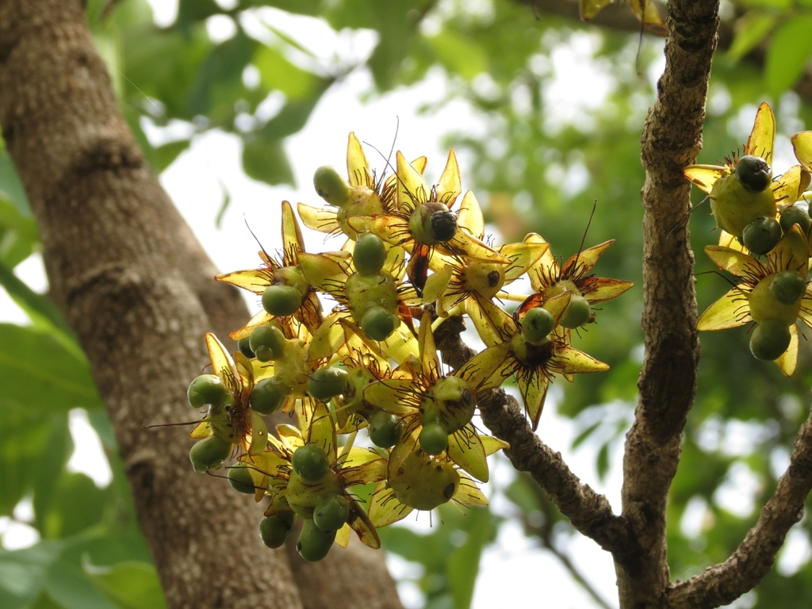

Ochnaceae
Ochna Family / Mickey Mouse Plant Family
Ochnaceae is a diverse family of trees, shrubs, and rarely herbs belonging to the order Malpighiales within the Rosids clade (Fabids). In its broad sense (sensu lato, following APG), it includes about 27-32 genera and nearly 550 species, incorporating groups formerly treated as separate families (Medusagynaceae, Quiinaceae). Distributed pantropically, the family is characterized by often alternate, simple leaves with stipules, typically 5-merous flowers with free petals (often yellow), variable stamens, a superior ovary (often deeply lobed with a gynobasic style), and diverse fruits frequently associated with a persistent or enlarged calyx/receptacle.
Overview
The Ochnaceae family, particularly in its expanded APG circumscription, represents a significant pantropical lineage within the large Malpighiales order. It includes the traditional Ochnaceae (like Ochna, Ouratea, Sauvagesia), the monotypic Medusagynaceae (Medusagyne oppositifolia, Jellyfish Tree, endemic to Seychelles), and the Neotropical Quiinaceae (Quiina, Touroulia, etc.). This broader grouping reflects relationships revealed by molecular data.
Members of the family inhabit diverse tropical ecosystems, from rainforests to savannas. They exhibit considerable morphological variation, especially in floral structure (stamen number, ovary form) and fruit type (capsules, berries, aggregates of drupelets).
Some species are known for timber (e.g., Lophira alata, Azobé or Ironwood), medicinal uses, or horticulture. Ochna serrulata (Mickey Mouse Plant) is widely cultivated for its attractive yellow flowers followed by black drupelets seated on an enlarged, bright red receptacle and persistent sepals, resembling the cartoon character. Medusagyne oppositifolia is critically endangered and of great conservation interest.
Quick Facts
- Scientific Name: Ochnaceae DC.
- Common Name: Ochna family, Mickey Mouse Plant family
- Number of Genera: Approximately 27-32 (sensu lato)
- Number of Species: Approximately 495-550 (sensu lato)
- Distribution: Pantropical.
- Evolutionary Group: Eudicots - Rosids - Fabids - Malpighiales
Key Characteristics
Growth Form and Habit
Trees, shrubs, or rarely perennial or annual herbs.
Leaves
Leaves are usually alternate (rarely opposite, e.g., Medusagyne), simple (rarely pinnately compound), often leathery, with margins typically serrated (sometimes entire). Stipules are present, often prominent, sometimes fringed, intrapetiolar, or falling early.
Inflorescence
Inflorescences are variable, terminal or axillary, typically cymose or racemose, sometimes paniculate or fasciculate (clustered).
Flowers
Flowers are typically bisexual (rarely unisexual), usually actinomorphic (radially symmetrical) or sometimes slightly zygomorphic, typically 5-merous (sometimes 4-merous or more). Key features include:
- Calyx: Sepals usually 5 (sometimes 4 or more), free, often imbricate (overlapping) in bud, frequently persistent and sometimes becoming enlarged and/or brightly colored (e.g., red) in fruit.
- Corolla: Petals usually 5 (sometimes 4 or more), free, often yellow or white (sometimes pink/red), frequently contorted or crumpled in bud, usually deciduous (falling early).
- Androecium: Stamens variable: 5, 10 (in 2 whorls), or numerous (up to ~200). Filaments are free or slightly fused at the base. Anthers typically dehisce by longitudinal slits or sometimes by terminal pores. Staminodes (sterile stamens) are sometimes present.
- Gynoecium: Ovary is superior. Structure is variable: either syncarpous with 2-5(-15) fused carpels, multilocular with axile or parietal placentation, and a terminal style; OR carpels (2-15) are distinct or deeply lobed around a central axis (gynobase), appearing almost apocarpous, with a gynobasic style (arising from the base between the lobes). Each carpel/locule typically contains 1 to many ovules.
Fruits and Seeds
Fruit type is diverse: typically a loculicidal or septicidal capsule, a berry, or an aggregate of drupelets. In many Ochnoideae (e.g., Ochna, Ouratea), the fruit consists of 1-15 fleshy drupelets seated on an enlarged, often fleshy and brightly colored receptacle and/or persistent calyx. Seeds sometimes winged or arillate.
Chemical Characteristics
Often contain flavonoids, tannins, and sometimes alkaloids or cyanogenic glycosides. Presence of silica bodies can occur.
Field Identification
Identifying Ochnaceae (sensu lato) involves recognizing their often alternate, simple, serrated leaves with stipules, typically 5-merous flowers with free (often yellow) petals, variable stamens, superior ovary (often lobed with gynobasic style), and diverse fruits frequently associated with a persistent/enlarged/colored calyx or receptacle.
Primary Identification Features
- Habit: Trees, shrubs, rarely herbs (Pantropical).
- Leaves: Usually alternate, simple, often serrated, with stipules (often conspicuous).
- Flowers: Usually bisexual, actinomorphic, 5-merous (typically).
- Sepals: Usually 5, free, often persistent and enlarging/coloring in fruit.
- Petals: Usually 5, free, often yellow or white, deciduous.
- Stamens: Variable (5, 10, or many).
- Ovary: Superior, syncarpous OR deeply lobed with gynobasic style.
- Fruit: Diverse - capsule, berry, or aggregate of drupelets often on enlarged/colored receptacle/calyx.
Secondary Identification Features
- Anthers: Sometimes poricidal dehiscence.
- Stipules: Can be large, fringed, or intrapetiolar.
- Gynobasic Style: Common in subfamily Ochnoideae.
Seasonal Identification Tips
- Year-round: Habit, leaf arrangement (alternate), presence of stipules, and serrated margins are useful vegetative clues.
- Flowering Season: Flowers with often yellow petals and variable stamen numbers appear.
- Fruiting Season: The diverse fruits are highly diagnostic, especially the drupelets on the enlarged red receptacle/calyx in Ochna ("Mickey Mouse Plant") or the capsules/berries of other groups. The persistent, often colored sepals are a key feature in many genera.
Common Confusion Points
- Rosaceae (Rose Family): Can have alternate simple serrated leaves with stipules, 5 petals, and numerous stamens. Differ in usually having a distinct hypanthium, often different fruit types (pomes, aggregate fruits on different receptacle types, follicles), and different ovary structure.
- Theaceae (Tea Family): Trees/shrubs with alternate simple serrated leaves, but stipules absent, flowers often showy with numerous stamens often fused to petal bases, superior syncarpous ovary, fruit usually a capsule. (Order Ericales).
- Clusiaceae (Guttiferae): Often have opposite leaves, typically yellow/orange latex, flowers with numerous stamens, superior syncarpous ovary, fruit a berry or capsule. (Order Malpighiales).
- Euphorbiaceae (Spurge Family): Highly variable, some have alternate simple leaves with stipules, but flowers are typically unisexual, often highly reduced (e.g., cyathia), ovary superior and 3-lobed, fruit usually a schizocarpic capsule. (Order Malpighiales).
Field Guide Quick Reference
Look For:
- Trees, shrubs, herbs (Pantropical)
- Alternate, simple leaves (usually serrated)
- Stipules present
- 5 sepals (often persistent/colored in fruit)
- 5 petals (often yellow, deciduous)
- Stamens 5, 10, or many
- Superior ovary (often lobed w/ gynobasic style)
- Fruit: capsule, berry, or drupelets on receptacle
Key Variations:
- Habit (tree to herb)
- Stamen number
- Ovary structure (syncarpous vs. deeply lobed)
- Fruit type (capsule, berry, drupelets)
- Persistent calyx/receptacle color
Notable Examples
Key genera in the Ochnaceae family (sensu lato) include:

Ochna serrulata
Mickey Mouse Plant, Small-leaved Plane
A shrub native to southern Africa, widely cultivated as an ornamental. Known for its yellow flowers followed by black, berry-like drupelets attached to a bright red, enlarged receptacle and persistent red sepals, resembling Mickey Mouse.

Ouratea spp.
(Ouratea)
A large genus of shrubs and trees found in tropical Americas and Africa. Similar to Ochna with often yellow flowers and drupelets on an enlarged receptacle, differing in technical details like anther dehiscence or style structure.

Lophira alata
Azobé, Ekki, Red Ironwood
A large tree native to West and Central Africa. Known for its extremely hard, heavy, durable timber (ironwood). Flowers have numerous stamens. Fruit is a nut surrounded by two unequal, wing-like persistent sepals.

Sauvagesia spp.
Saint Hilaire Plant
A genus of herbs or subshrubs found pantropically. Flowers often have prominent staminodes in addition to fertile stamens. Fruit is typically a septicidal capsule.

Medusagyne oppositifolia
Jellyfish Tree
A critically endangered tree endemic to the island of Mahé in the Seychelles. Unique in the family (sensu lato) for its opposite leaves. Fruit is a septicidal capsule, the dehisced valves resembling jellyfish tentacles. Represents the formerly monotypic family Medusagynaceae.
Phylogeny and Classification
Ochnaceae belongs to the large and diverse order Malpighiales, which is part of the Fabids (Eurosids I) clade within the Rosids. Malpighiales contains roughly 40 families, including major groups like Euphorbiaceae, Salicaceae, Violaceae, and Passifloraceae.
Within Malpighiales, Ochnaceae (sensu lato, including Medusagynaceae and Quiinaceae) forms a distinct clade. Its exact position relative to other families is complex, but it appears related to families like Clusiaceae, Podostemaceae, Hypericaceae, and Bonnetiaceae. The integration of Medusagynaceae and Quiinaceae into Ochnaceae reflects the phylogenetic relationships revealed by molecular data, grouping these previously disparate lineages based on shared ancestry.
Position in Plant Phylogeny
- Kingdom: Plantae
- Clade: Angiosperms (Flowering plants)
- Clade: Eudicots
- Clade: Rosids
- Clade: Fabids (Eurosids I)
- Order: Malpighiales
- Family: Ochnaceae
Evolutionary Significance
Ochnaceae is significant for understanding Malpighiales evolution:
- Diversity within Malpighiales: Represents a distinct lineage showcasing variation in floral structure (especially ovary and stamen number) and fruit types within this massive order.
- Phylogenetic Integration: The inclusion of Medusagynaceae and Quiinaceae based on molecular data highlights how phylogenetic studies reshape understanding of family boundaries and relationships.
- Fruit and Dispersal Evolution: The diverse fruit types (capsules, berries, drupelets on fleshy receptacles) within the family offer insights into the evolution of different dispersal strategies.
- Biogeography: Its pantropical distribution, along with the extreme endemism of some included lineages (like Medusagyne), provides data for studying tropical plant diversification and historical biogeography.